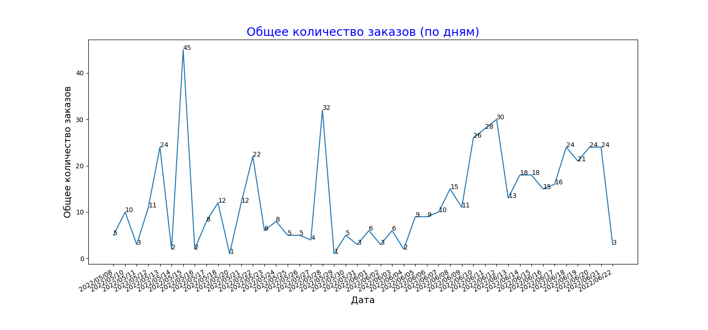

{% extends "base.html" %}
{% set active_page = "analytics" %}
{% block title %}Analytics{% endblock %}
{% block head %}
{{ super() }}
{% endblock %}
{% block page_content %}
Аналитика

{{array_result}}
{{values}}
{{counts}}
{{result_status}}
{{created_statuss}}
{{array_status}}
{% endblock %}
{% block scripts %}
{{ super() }}
{% endblock %}